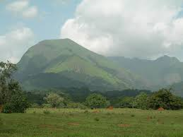
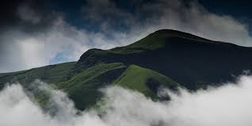
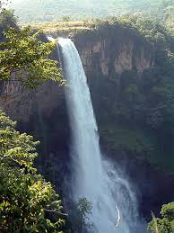
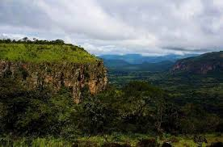

Breaking news
Opponents of the current regime of President Alpha Condé who changed the constitution by force to stay in power.
Guinea is a country in West Africa bordered by the Atlantic Ocean to the west. It is famous for the integral nature reserve of Mount Nimba, located in the south-east of the country. The reserve protects a forested mountain range that is home to local plants and animals, including chimpanzees and viviparous toads. On the coast, the capital, Conakry, hosts the large mosque, modern, and the national museum, which contains regional objects.

The integral nature reserve of Mount Nimba is located on Mount Nimba (1,752 m) which dominates the surrounding savannahs and whose slopes are covered with dense forest. This forest is home to particularly rich flora and fauna, with endemic species such as the viviparous toad (Nectophrynoides occidentalis) or chimpanzees which use stones as tools.
 
The climate, of tropical type, is characterized by a dry season which lasts from four to seven months and a seasonrainy for five to eight months depending on the natural regions described below. Average rainfall annual is equal to 1,651 mm and varies from 1,200 mm in upper Guinea to 4,200 mm in lower Guinea. The annual average temperatures are between 21 ° C and 27 ° C. Average relative humidity annual air is above 60 percent, with a minimum of 29 percent on average Guinea (Labé) and a maximum of 98 percent in lower Guinea (Conakry). Average evapotranspiration annual ranges from 1,500 mm to 1,650 mm. The prevailing winds are the monsoon and the harmattan, blowing fromthe Atlantic Ocean and the Sahara respectively.
Opponents of the current regime of President Alpha Condé who changed the constitution by force to stay in power.